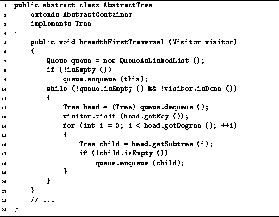

Data Structures and Algorithms
with Object-Oriented Design Patterns in Java
Data Structures and Algorithms
with Object-Oriented Design Patterns in Java
Program  defines the breadthFirstTraversal
method of the AbstractTree class.
As defined in Section ,
a breadth-first traversal of a tree visits the nodes
in the order of their depth in the tree and
at each level the nodes are visited from left to right.
defines the breadthFirstTraversal
method of the AbstractTree class.
As defined in Section ,
a breadth-first traversal of a tree visits the nodes
in the order of their depth in the tree and
at each level the nodes are visited from left to right.

Program: AbstractTree class breadthFirstTraversal method.
We have already seen in Section a non-recursive
breadth-first traversal algorithm for N-ary trees.
This algorithm makes use of a queue as follows.
Initially, the root node of the given tree is enqueued,
provided it is not the empty tree.
Then, the following steps are repeated until the queue is empty:
 Copyright © 1998 by Bruno R. Preiss, P.Eng. All rights reserved.
Copyright © 1998 by Bruno R. Preiss, P.Eng. All rights reserved.